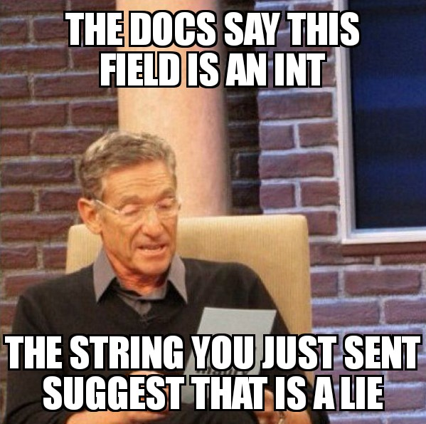
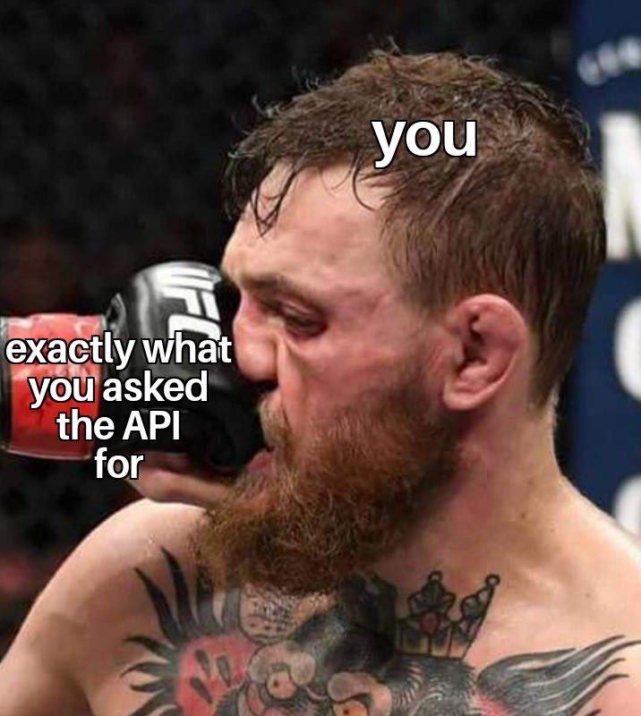

REST is Dead
Long Live GraphQL
Whoami
What is GraphQL?
POST - https://data.api/graphql
{
"query": "
query GetPlanet($id:ID) {
planet(id:$id) {
name
terrains
}
}
",
"variables": { "id": "cGxhbmV0czox" }
}
GET - https://graphql.github.io/swapi-graphql/?
query=query%20GetPlanet(%24id%3AID)%20%7B%0A%20%20
planet(id%3A%24id)%20%7B%0A%20%20%20%20name%0A%20
%20%20%20terrains%0A%20%20%7D%0A%7D&operationName
=GetPlanet&variables=%7B%20%22id%22%3A%20%22cGxhbm
V0czox%22%20%7D
{
"data": {
"planet": {
"name": "Tatooine",
"terrains": [
"desert"
]
}
}
}
query GetPlanet($id:ID) { planet(id:$id) { name terrains }}Fuck REST
An extremely biased guide on why you should stop writing REST APIs and start writing GraphQLWhy does REST suck?

Introspection

Introspection - REST Sucks

Introspection - GraphQL is Better

query {
__schema {
queryType {
name
description
fields {
kame
type {
name
description
}
}
}
}
}
{
"data": {
"__schema": {
"queryType": {
"name": "Root",
"description": null,
"fields": [
{
"name": "allFilms",
"type": {
"name": "FilmsConnection",
"description": "A connection to a list of items."
}
},
{
"name": "film",
"type": {
"name": "Film",
"description": "A single film."
}
},
{
"name": "allPeople",
"type": {
"name": "PeopleConnection",
"description": "A connection to a list of items."
}
},
]
}
}
}
}
Predictability

Predictability - REST Sucks
Predictability - GraphQL is Better

query {
film(id:"cGVvcGxlOjE=") {
title
director
}
}
{
"data": {
"film": {
"title": "A New Hope",
"director": "George Lucas"
}
}
}
Errors

Errors - REST Sucks

Errors - GraphQL is Better
query {
film(id:"cGVvcGxlOjE=") {
title
director
}
tragedyOfDarthPlagueis {
theStory
}
}
{
"data": {
"film": {
"title": "A New Hope",
"director": "George Lucas"
},
"tragedyOfDarthPlagueis": null,
},
"errors": [
{
"path": [ "tragedyOfDarthPlagueis" ],
"message": "Not a story the Jedi would tell you"
}
]
}
Docs
Docs - REST Sucks

Docs - GraphQL is Better
Specificity

Specificity - REST Sucks

https://swapi.co/api/people/1/
{
"name": "Luke Skywalker",
"height": "172",
"mass": "77",
"hair_color": "blond",
"skin_color": "fair",
"eye_color": "blue",
"birth_year": "19BBY",
"gender": "male",
"homeworld": "https://swapi.co/api/planets/1/",
"films": [
"https://swapi.co/api/films/2/",
"https://swapi.co/api/films/6/",
"https://swapi.co/api/films/3/",
"https://swapi.co/api/films/1/",
"https://swapi.co/api/films/7/"
],
"species": [
"https://swapi.co/api/species/1/"
],
"vehicles": [
"https://swapi.co/api/vehicles/14/",
"https://swapi.co/api/vehicles/30/"
],
"starships": [
"https://swapi.co/api/starships/12/",
"https://swapi.co/api/starships/22/"
],
"created": "2014-12-09T13:50:51.644000Z",
"edited": "2014-12-20T21:17:56.891000Z",
"url": "https://swapi.co/api/people/1/"
}
Specificity - GraphQL is Better

query {
person(id:"cGVvcGxlOjE=") {
name
}
}
{
"data": {
"person": {
"name": "Luke Skywalker"
}
}
}
Timelyness

Timelyness - REST Sucks

POST https://service.api/my-stuff - 202
GET https://service.api/my-stuff - 404
GET https://service.api/my-stuff - 404
GET https://service.api/my-stuff - 404
GET https://service.api/my-stuff - 404
GET https://service.api/my-stuff - 404
GET https://service.api/my-stuff - 200 - Here it is
Timelyness - GraphQL is Better

subscription {
update { type message }
}
Updates

Updates - REST Sucks
Updates - GraphQL is Better

Okay, you're convinced.
How to get started?